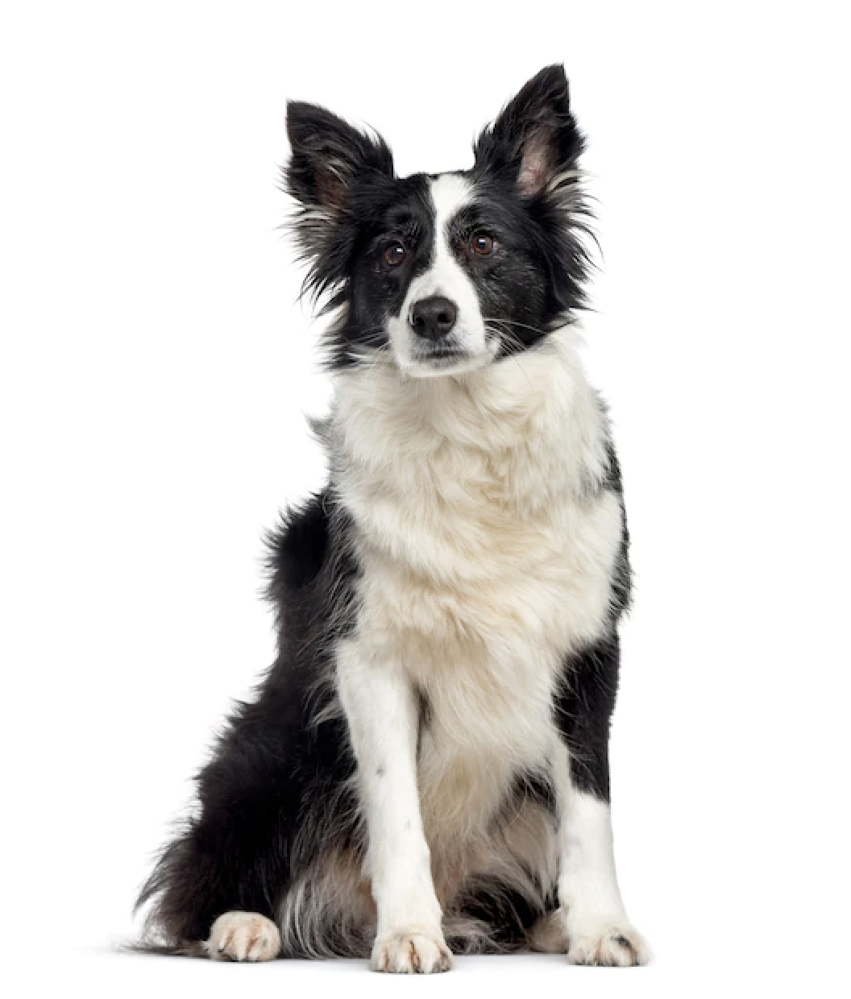

Park YuJin


- 간호사/보건교사
- ESTJ
- 산책하는 강아지 좋아
- 왕초보!!
자기소개 및 MBTI : A반 9조 박유진입니다. 취미는 스케이트보드 타기입니다. 공원에서 보드 타다가 강아지를 만나면 온종일 행복해합니다. 바닥에 있는 머리카락을 청소기로 치우면 그것 또한 행복합니다. 그래서 공부 전에 항상 청소합니다. MBTI는 ESTJ입니다. 성격 유형 검사는 별로 관심 없습니다.
장점 : 도전을 잘합니다. 어떤 분야에 관심이 생기면 바로 실행합니다. 모든 것에 이면이 있는 법입니다. 하고 싶은 것만 할 수 없어 인내하는 편입니다. 당연히 좋아서 하는 게 더 크겠지요.
협업 스타일 : 의견이 있으면 말합니다. 의견 충돌 시 받아들이고 양보하는 편입니다. 만약 상대방이 제 의견을 수용해준다면 속으로 기뻐하고 더 책임감이 생깁니다.